Evento de Navidad
Tres propuestas para vuestra reunión y celebración de fin de año.
Elegid el lugar, el ritmo y el ambiente que mejor encaje con el equipo.
Una Navidad, varias formas de celebrarla.
Tres propuestas para diseñar vuestro encuentro de equipo: reunión, gastronomía y celebración.
Separar la reunión, el team building y la celebración permite disfrutar de cada momento sin sobrecargar la jornada.
Una jornada muy completa: reunión de socios, presentaciones, coffee break, comida, team building y cena de gala. Es viable, pero implica una agenda muy extensa, poco margen para disfrutar de cada actividad, más complejidad logística y menos flexibilidad para quien viene de fuera de Barcelona o tiene compromisos familiares.
Por eso proponemos tres alternativas más equilibradas, que mantienen los objetivos del encuentro y dan a cada momento su propio espacio.
Reunión + celebración
Día 1: reunión de trabajo + coffee break. Día 2: actividad o celebración + comida o cena.
Meeting & Celebration
Reunión + coffee break + comida o cena.
Meeting & Experience
Reunión + coffee break + actividad de dinamización o team building + comida o cena.
Tener en cuenta los desplazamientos y horarios
Recomendamos diseñar la jornada para que no se alargue demasiado, especialmente porque algunos asistentes se desplazan desde fuera de Barcelona.
Las tres con la reunión en Norrsken —reunión y mesa en el mismo sitio, con vistas al mar—. Cambia dónde celebráis y si incluís team building.
El team building es opcional. Nuestra favorita es la Opción 1, sin team building.
Nosotros haríamos comida, no cena. Al grupo le cuesta animarse, y una comida consigue más asistencia —sobre todo para quien tiene familia o viene de fuera—. Quien quiera alargar la fiesta, sigue por su cuenta.
Día 16 · Mañana
La reunión y el team building se hacen el día 16 por la mañana, y la celebración de Navidad se pasa al día 17. Se divide en dos días para que no se haga pesado.
Día 16 · Tarde
La reunión y el team building se hacen el día 16 por la tarde, y la celebración de Navidad se pasa al día 17. Se divide en dos días para que no se haga pesado.
Todo en un día
Reunión, team building y comida de Navidad el mismo día, por la mañana.
Espacios para la reunión
Tres salas en el centro de Barcelona para la reunión y las presentaciones, el 16 o el 17 de diciembre. Todos los precios son sin IVA.


Norrsken
Todo en el mismo edificio: la reunión en la sala Red Room y la comida o la cena en el restaurante Skapa, sin traslados.

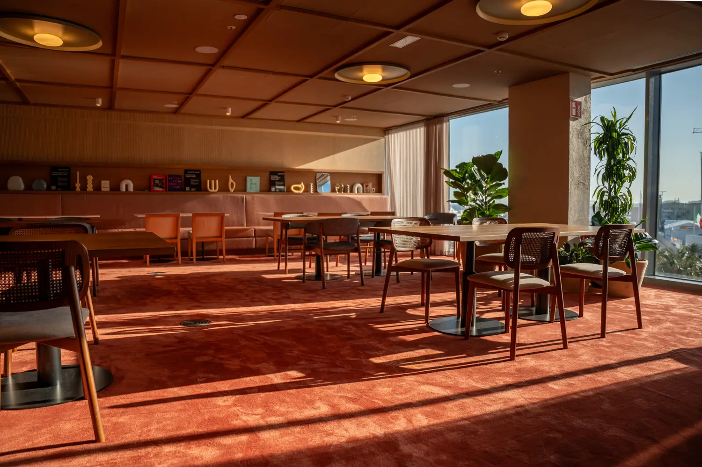

Coffee corner, mini bollería Brunells (2 piezas: croissant de mantequilla, chocolate o pistacho) y brocheta de fruta.
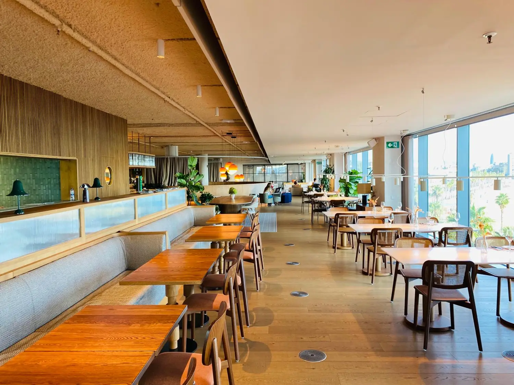
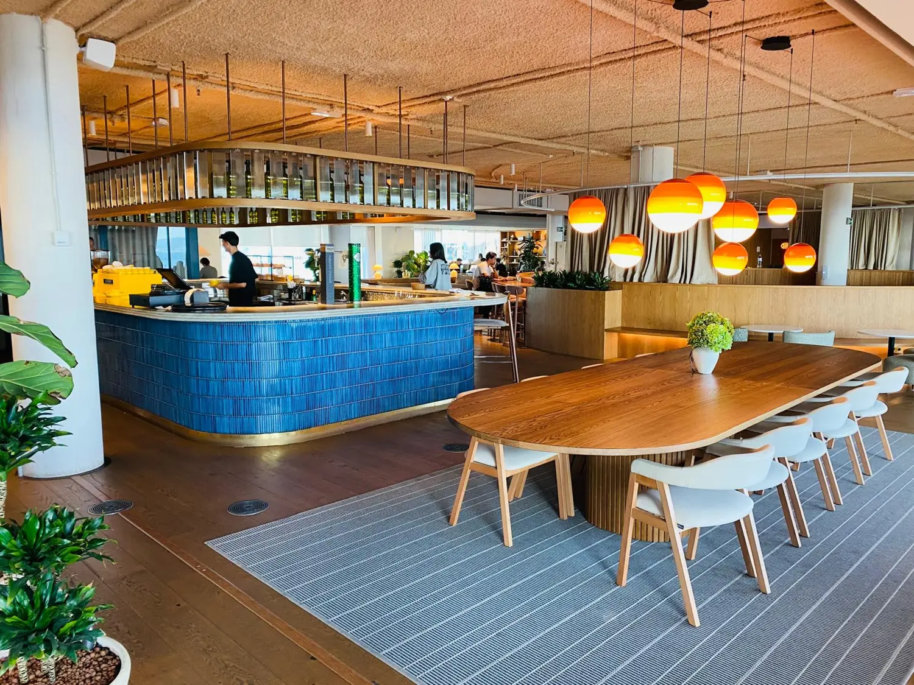

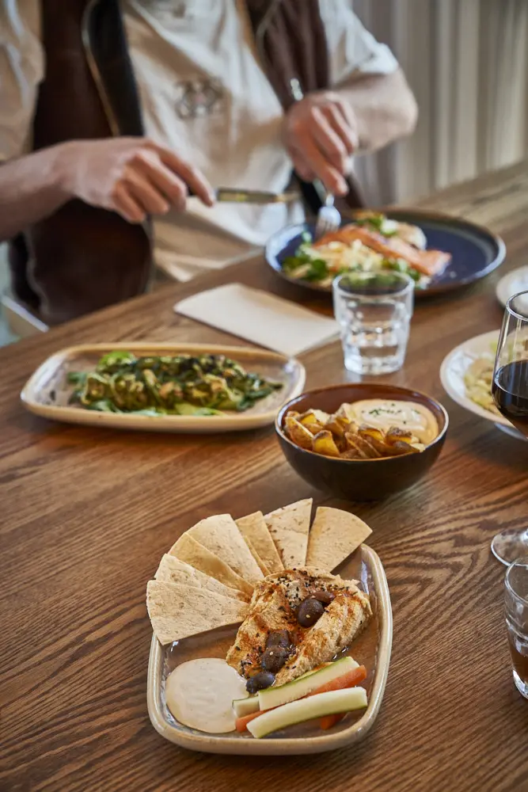
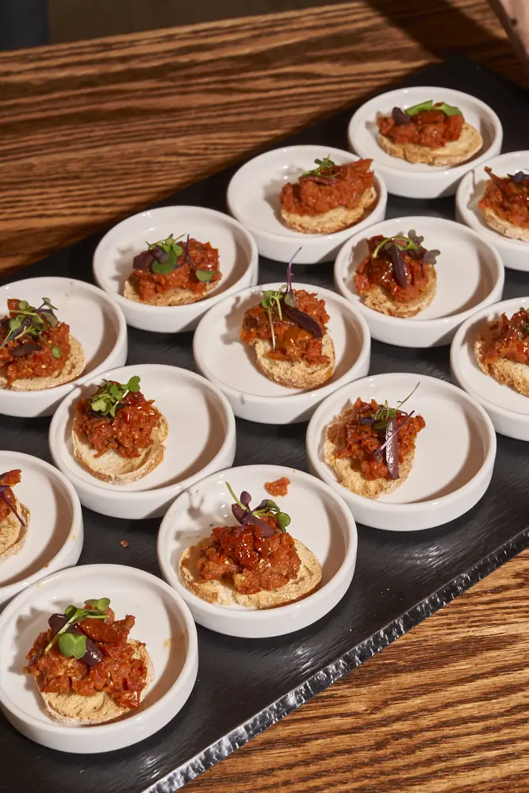

Gatsby
Una cena con espectáculo en directo: cantantes, acróbatas y bailarines cada 20 minutos, DJ entre actuaciones y, a medianoche, la fiesta se une al club.
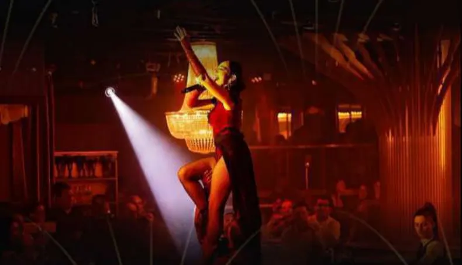
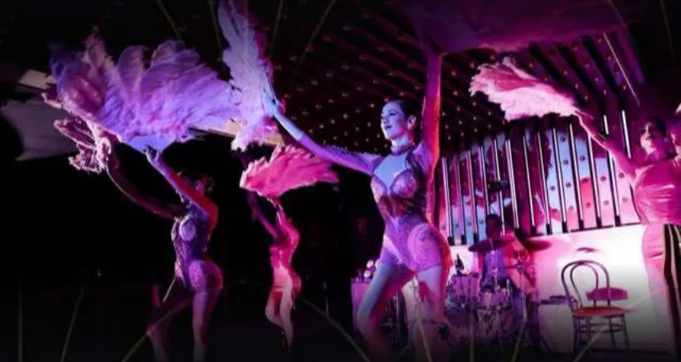
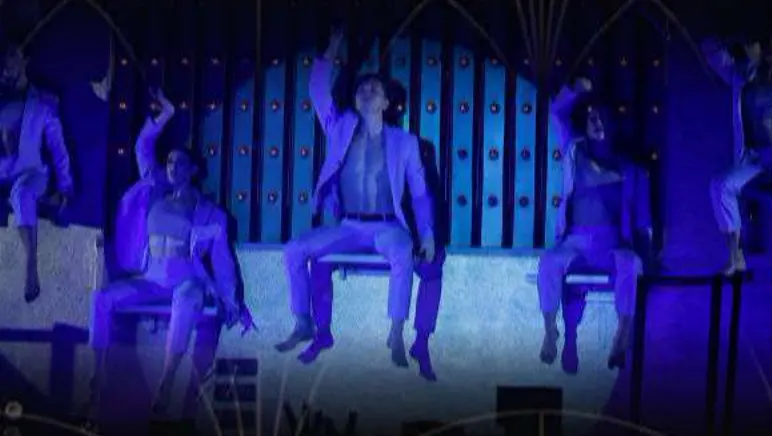
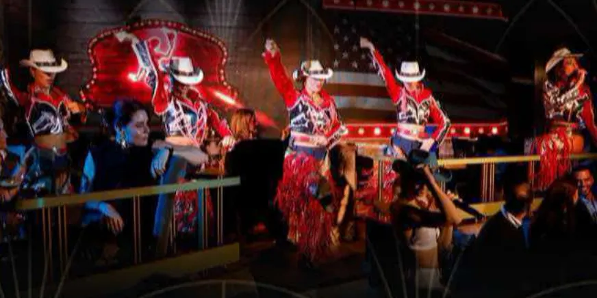

Cena con espectáculo
Entrantes para compartir, segundo a elegir, postre, vino, agua y copa de cava. Incluye el espectáculo durante la cena y la sesión de DJ. Hay menú vegetariano o pescetariano.
El Tribut
Cena de Navidad en el Puerto Olímpico, con vistas al Mediterráneo y un interior inspirado en el Modernismo. Solo disponible para cenas.


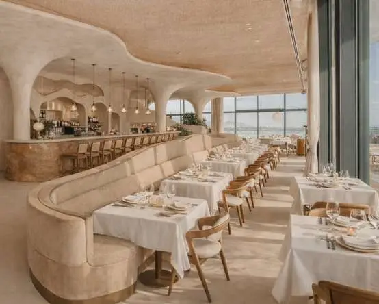

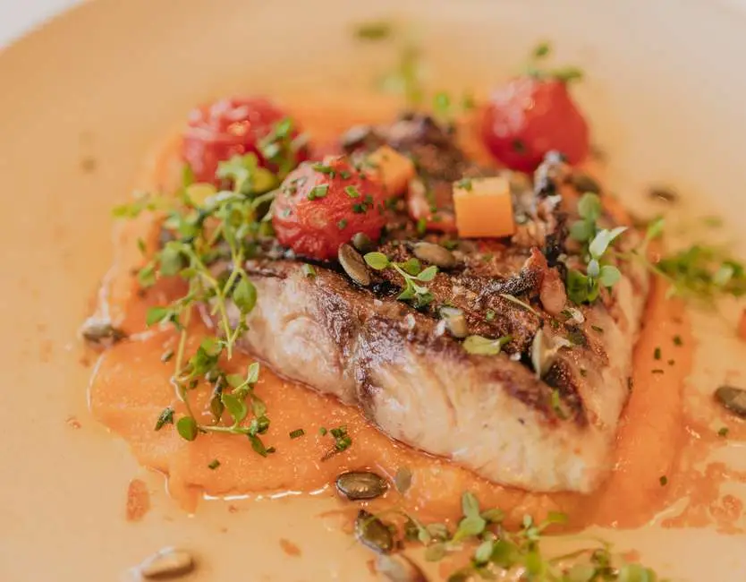
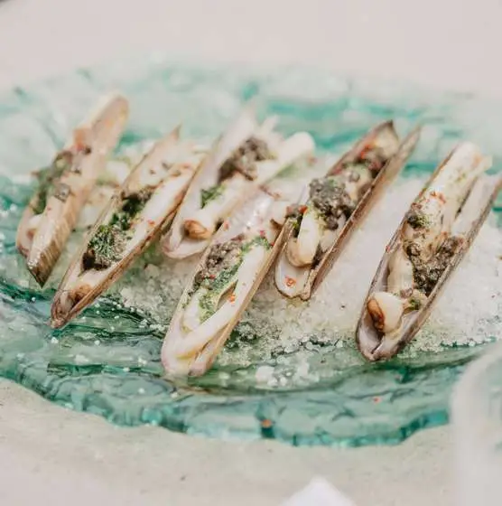


Menú de Navidad
Aperitivo, entrantes para compartir, principal a elegir, postre y café, con bebidas incluidas.
Team building
En este caso no haríamos team building. Haríamos la reunión y la cena o la comida. Si queréis incluirlo, lo ideal es hacer la reunión y el team building un día antes, separados de la comida o la cena. Todo junto nos parece demasiado.
De todos modos, os presentamos algunas opciones por si queréis incluirlo.
Según el team building elegido, el espacio se tendrá que recotizar.
Waka
Construir una waka, la barca de guerra polinesia, y plantar cara con una haka. Por equipos, o «tribus», montáis y decoráis vuestra canoa, ensayáis la haka, os maquilláis con el tatuaje de vuestro equipo y compiten entre sí.
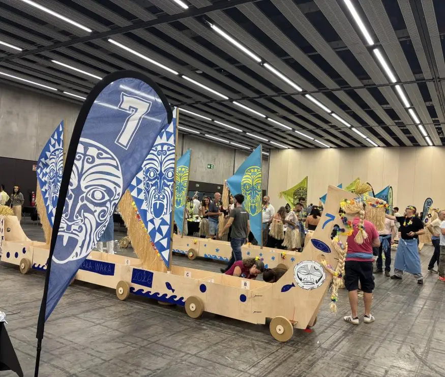

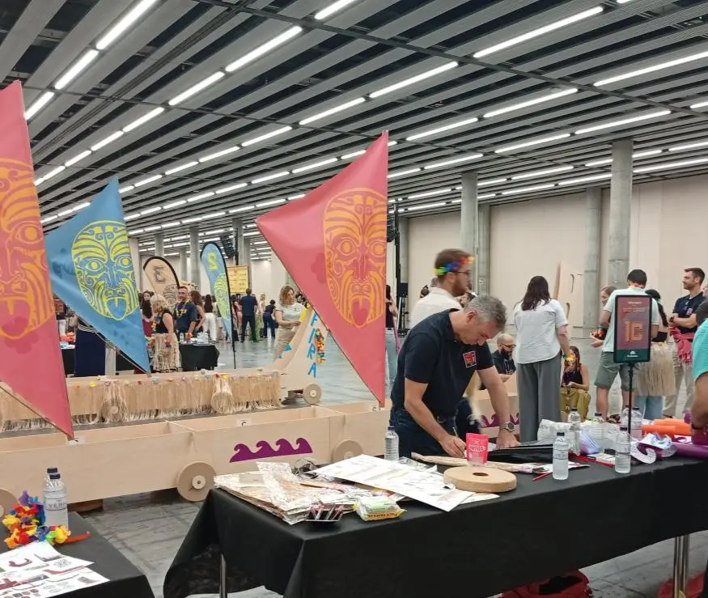
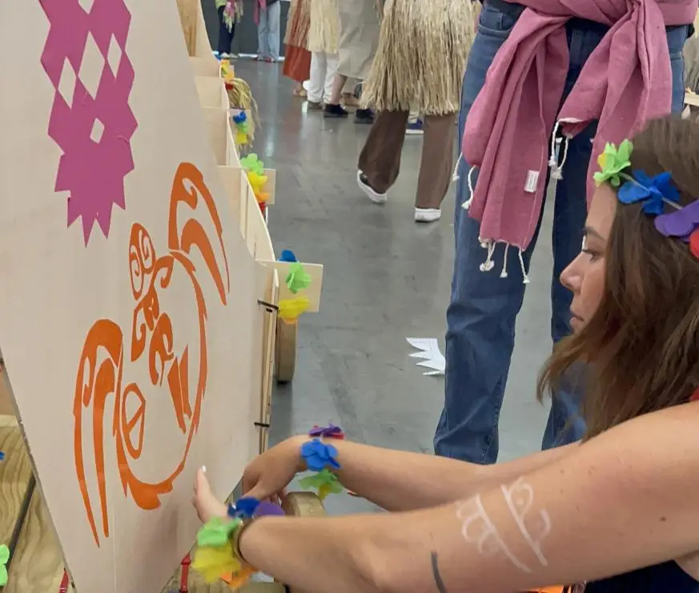
Mysterious Game
Un escape room con rol en vivo en los años 30. Cada equipo encarna a uno de los cinco personajes de la mansión Whiteford, interroga, busca pistas y debe descubrir quién es el infiltrado antes de que sea tarde.
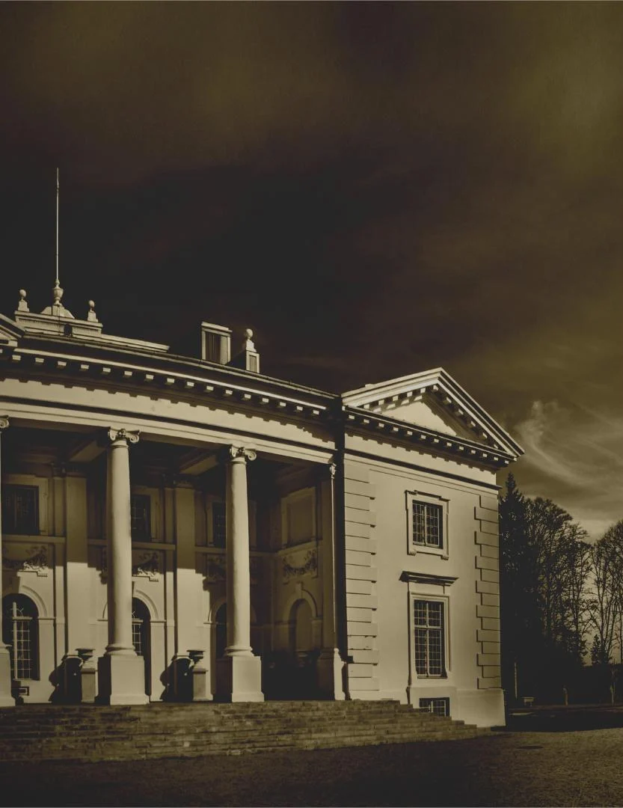
Las tres opciones, en números
Estimación para 40 personas, sin IVA. Precio total del grupo y por persona.
Elegís la que más os encaje
Precio total del grupo (40 personas), sin IVA. Cotizado con team building de 71 €; hay opciones más caras. Sitio de reunión + restaurante, con o sin team building.
| Reunión | Restaurante | Con team building | Sin team building |
|---|---|---|---|
| The One Barcelona | Gatsby | 8.413,20 € | 5.373,20 € |
| El Tribut | 6.836,80 € | 3.796,80 € | |
| Norrsken (Skapa) | 7.333,20 € | 4.293,20 € | |
| H10 Cubik | Gatsby | 8.236,25 € | 5.276,25 € |
| El Tribut | 6.659,85 € | 3.699,85 € | |
| Norrsken (Skapa) | 7.156,25 € | 4.196,25 € | |
| H10 Universitat | Gatsby | 8.266,36 € | 5.276,36 € |
| El Tribut | 6.689,96 € | 3.699,96 € | |
| Norrsken (Skapa) | 7.186,36 € | 4.196,36 € | |
| Norrsken | Gatsby · Recomendada | 9.144,00 € | 5.648,00 € |
| El Tribut · Recomendada | 7.567,60 € | 4.071,60 € | |
| Norrsken (Skapa) | 8.064,00 € | 4.568,00 € |
Honorarios de PA Hub aparte.
¿Cómo seguimos?
Necesitamos definir tres puntos para avanzar.
Una jornada o dos jornadas.
Comida o cena de Navidad.
Incluirlo el día 16 o reservarlo para otra ocasión.
Una vez definido el formato, podremos avanzar con la disponibilidad y las reservas de los espacios seleccionados.
“Gracias por confiar una vez más con nosotros”